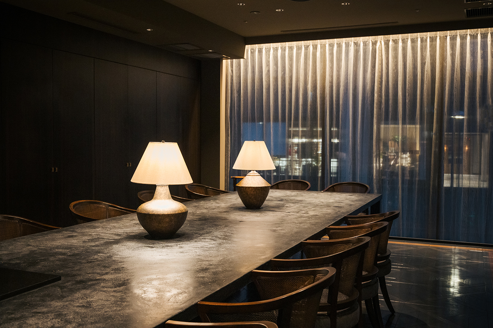
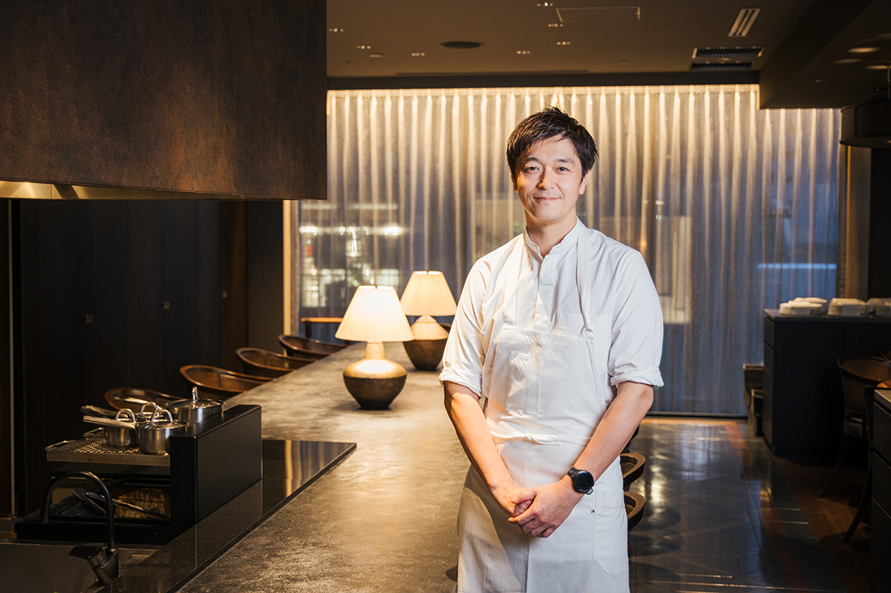
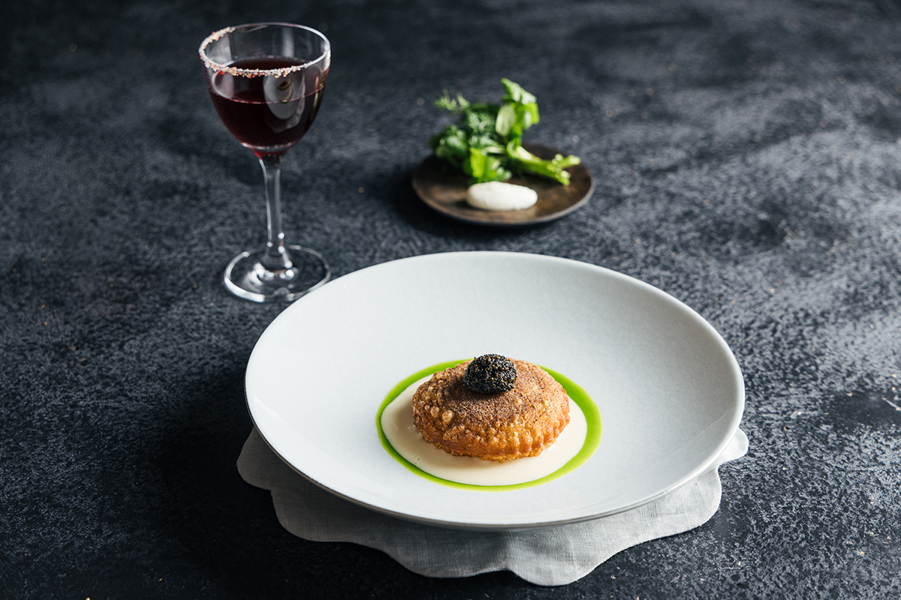
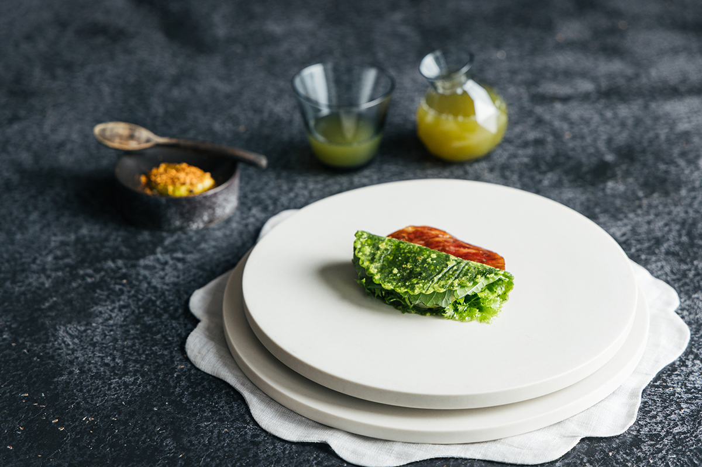
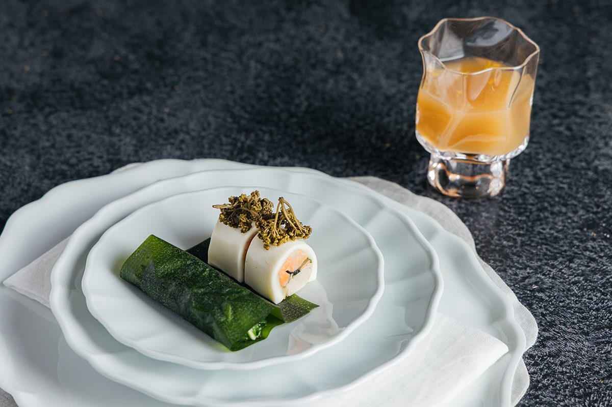
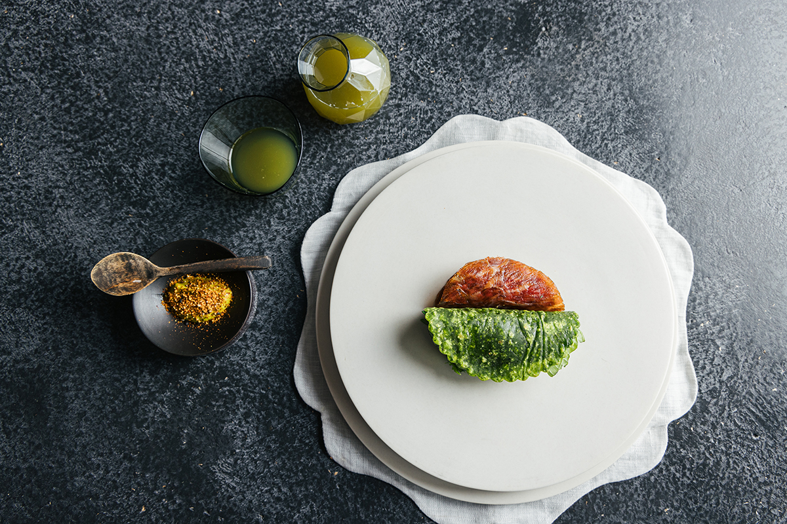
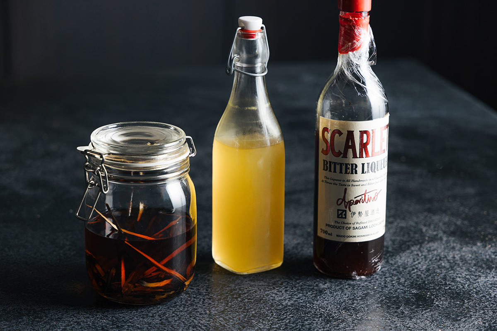

Токио · Адзабудай Хиллз · ресторан
Florilège в Адзабудай Хиллз: французская кухня, где главное блюдо из овощей

Florilège шефа Хироясу Каватэ входит в число самых известных ресторанов Японии. В 2023 году он переехал в Адзабудай Хиллз и сделал главным героем меню овощи, причём совсем не в простом исполнении.
Ресторан
Один стол на пятнадцать метров
К 2024 году Florilège шесть лет подряд держал две звезды гида «Мишлен», получил зелёную звезду Michelin, а в 2023 году занял 27-е место в списке «50 лучших ресторанов мира». Ведёт ресторан шеф Хироясу Каватэ. В 2023 году Florilège переехал в Адзабудай Хиллз, большой новый комплекс в Токио, где собраны магазины, отель, офисы, жильё и международная школа.

Ресторан занимает второй этаж здания «Гарден-плаза D» с плавными, словно живыми формами работы бюро Heatherwick Studio. На этаже нет других заведений. Из приёмной, похожей на внутренний дворик, гость проходит через ворота, затем по узкому коридору, и только потом перед ним открывается зал. Здесь всё устроено как табль-д'от: гости сидят вокруг одного большого стола длиной около 15 метров, а шеф готовит прямо перед ними. Путь от входа до стола продуман так, будто вас пригласили домой к самому шефу, и это заметно волнует.
Идея
Мясо как гарнир к овощам
Шеф Каватэ родился и вырос в Токио. В новом квартале родного города его французская кухня устроена непривычно: главное блюдо курса выбирают не между мясом и рыбой, а между мясом и овощами.
«Растительная кухня у нас не означает, что мы не используем мясо и рыбу. Это кухня, в центре которой овощи. Если мясо или рыба помогают вкуснее съесть овощи, мы их добавляем, если нет, обходимся без них. Во французской кухне овощи обычно служат гарниром к мясу, а у нас, наоборот, мясо или рыба становятся гарниром к овощам»
шеф Хироясу Каватэ
Хороший пример здесь пирог с дайконом. Внутри конфи из дайкона и плотное, как ньокки, пюре из того же дайкона. Всё это заворачивают в тесто и жарят во фритюре, а подают с маслом из кресс-салата и соусом из сливок и домашнего иризакэ. Сверху порошок из водорослей комбу и тонбури, мелкие зёрна, которые здесь кладут вместо икры. В одной тарелке слой за слоем открываются вкус и насыщенность каждого продукта.

Мясо и рыбу здесь всё же используют. В двух видах тако есть вяленая говядина и говядина акауси, а в блюде из сюнгику, съедобной хризантемы, печень морского чёрта анкимо. Но на тарелке овощи, главные герои, всегда лежат ближе к гостю.


Почему овощи
Самый японский продукт
Florilège ждут гости и из Японии, и из-за рубежа. Почему же шеф решил поставить в центр овощи?
«Когда я готовил на выездных ужинах за границей, я задумался: какой продукт по-настоящему японский? В большом городе можно заказать японские продукты с рынка Тоёсу накануне и приготовить то же меню, что и дома. А вот с овощами у меня бывали трудности. Овощи есть везде, их принято покупать на месте. Они вкусные в любой стране и имеют вкус своей земли, но к моим блюдам иногда не подходят. Тогда я и понял, что именно овощи и есть самый японский продукт. Японские овощи по-настоящему вкусные. Не думаю, что есть другая страна, где их так много и они такие разные»
шеф Хироясу Каватэ

Кухня, построенная на овощах, обычно вызывает мысли о простоте и бережном отношении к продукту. У Каватэ всё наоборот. Его блюда требуют огромного труда, времени и техники, их доводят до результата шаг за шагом, и в каком-то смысле они не идут за продуктом, а ведут его за собой.
«В Японии принято считать достоинством простую кухню, где продукт почти не трогают. Я не такой повар. Мои блюда выглядят простыми, но за ними стоит много кропотливой работы. Этим я и горжусь как повар»
шеф Хироясу Каватэ
Кухня
Знакомые продукты, незнакомый вкус
Откуда приходят овощи, в меню намеренно не пишут, хотя шеф часто сам ездит в разные районы страны и договаривается с фермерами напрямую. Команду он постоянно спрашивает: «Какие овощи сейчас самые вкусные?» Меню он собирает, отталкиваясь от овощей.

В 2024 году шеф увлекался и кухней Эдо. Гурманов старого Токио кормили продуктами, которые свозили со всей страны, и готовыми приправами вроде соевого соуса, мисо и мирина. Повара вкладывали в блюда много труда и искали вкус богаче, чем у самого продукта.
«Хочу брать продукты, которые пробовал каждый, и делать из них вкус, который никто не мог себе представить. Поэтому, думаю, в моих блюдах не встретится ни одного продукта, который был бы вам незнаком. Местный ресторан в провинции может гордиться особыми продуктами, которых нет больше нигде. Но если то же самое станет делать ресторан в Токио, смысла в этом не будет. Если знакомый продукт пройдёт через фильтр Florilège и станет вкусом, который трогает, гость его запомнит. Это я и считаю нашей главной силой»
шеф Хироясу Каватэ
Florilège постоянно меняется и показывает Токио таким, какой он есть сегодня. Впечатления, которые дарит шеф Каватэ, притягивают гостей из самых разных стран.
Florilège
- Адрес
- Токио, Минато, Тораномон, 5-10-7, Адзабудай Хиллз, Гарден-плаза D, 2-й этаж
- Телефон
- +81 3-6435-8018
- Часы работы
- обед с 12:00 или 12:30 до 15:00, ужин с 18:00 или 18:30 до 22:00
- Выходные
- понедельник, обед во вторник, ужин в воскресенье, а также нерегулярные выходные
- Цены / Вход
- обеденный курс 10 000 иен, ужин 20 000 иен (с налогом, без платы за обслуживание); бронь только онлайн
Фото: Майко Фукуи.